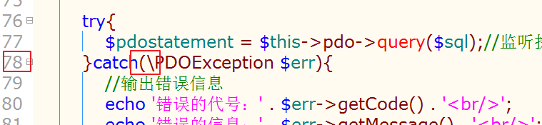

1. MVC基本概念
为什么使用MVC
MVC是目前应用最广的一种编程方式，本质上，MVC是将代码进行分离，将显示数据的部分、处理业务的部分 和 操作数据的部分 都独立出来。
打个比方，没有使用MVC方式进行开发的项目就好像是一个管理混乱的餐馆，客户点菜（需求），餐厅的经理、服务员、清洁员一起上，然后你一嘴我一嘴的告诉厨师要做什么菜，最后菜出来了，又不管各自的职能都去端菜给客户，极其混乱：
而使用了MVC方式开发的项目就好比是一个管理有序的餐馆，每个人员都知道自己该做什么，调理清晰，执行业务顺畅：
我们以第二天开发的新闻管理系统为例：
以前的实现方式：
使用MVC的实现方式：
使用MVC的好处实在是太多，最主要的方面体现在：
1， 可以实现单入口，增强一个项目中对页面地址的控制能力；
2， 功能和数据分层明确，便于后台人员维护和管理；
3， 极其有利于多人协同开发（前端与后台，后台与后台），各成员之间互不影响；
4， 拥有比较完善的基本结构，多人协同开发也不至于产生混乱。
什么是MVC
MVC不是某种语法，而是前辈们经过无数的实践总结而得出来的一种便捷，智慧的设计思想。
MVC是三个英文单词的首字母，分别代表三个组件：
M –》Model
V –》View
C –》Controller
MVC思想大体上将我们开发的程序分成三个部分（三大组件），并且规定这三个部分：
Model表示模型层，负责数据业务规则的处理，凡是跟数据操作有关的内容都属于数据逻辑，只要与SQL指令有关，那么都属于模型（数据逻辑）；
View表示视图层，负责展示数据，其实就是我们看到的页面，也就是模板template（模板），用来承载数据的容器，通常是HTML文件（显示[HTML]，美化[CSS]和效果[JavaScript]）；
Controller表示控制器，也叫作模块（Module），负责接受用户请求，并调用相应的模型和视图处理和展示业务，是用来与用户直接接触的脚本代码（浏览器直接提交给PHP的脚本对象），判断用户操作的逻辑性，在需要的时候，他可以调用模型操作数据，也可以调用视图展示页面。
名次释义
model ： 模型。
module ： 模块，组件。
2. 案例：使用MVC实现新闻管理系统
1. MVC实现过程
第一步，搭建MVC基本结构，配置专用虚拟主机域名
在code目录中创建了名为mvc的目录，
mvc目录结构如下图：
-
在apache的虚拟主机配置文件httpd-vhosts.conf中增加虚拟主机配置项，
在hosts文件中增加配置项，
重启apache,
测试虚拟主机域名是否配置成功，
在入口文件index.php中构建如下代码：
访问index.php效果如下：
第二步，将HTML模板页面转移进项目目录
复制后台所需的三个模板页面，拷贝到mvc/app/admin/view目录中，
在view目录中创建名为news的目录，
拷贝三个文件到news目录中，
复制前台所需的模板页面，拷贝到mvc/app/home/view目录中，
复制如下图所示文件，
拷贝到view目录中，
第三步，构建控制器展示视图模板文件
建议：每张有实际意义的表，建立一个对应的控制器类
在mvc/app/admin/controller目录中创建名为NewsController.class.php，
在NewsController.class.php中创建相应的类，并且构建方法展示出不同的后台模板页面，

测试访问不同的页面，
访问后台新闻列表页：在NewsController.class.php类中构建测试代码，如下
访问NewsController.class.php文件，
如果要切换访问添加页，只要将调用的方法切换为访问showAd方法即可，
再次访问NewsController.class.php，页面就成功的切换到了后台新闻添加页，
==问题==：当前我们访问后台页面都是通过访问NewsController.class.php文件实现的，但是MVC的流程要求访问任何页面都应该通过访问入口文件（index.php）实现，所以，我们需要做进一步的改进。
第四步，实现通过入口文件访问不同的页面
剪切NewsController.class.php中访问不同页面的测试代码，如下图所示，
拷贝到入口文件mvc/index.php中，如下图所示，同时还需在index.php中实例化NewsController类之前引入该类的类文件，
调整入口文件Index.php中的代码，如下图所示将蓝框中的代码改为红框中的代码：
调整mvc/app/admin/controller/NewsController.class.php中的代码，如下图所示将蓝框中的代码改为红框中的代码：
测试访问入口文件index.php的效果，
现在我们虽然能够实现从index.php单入口访问不同的页面了，但是每次我们切换访问页面，就需要跑到index.php中手动微调代码，非常的不方便也不智能。所以我们进一步作出改进，在index.php中定义三个变量参数，分别$action动作参数，$module模块参数，$plat平台参数。
名词释义
action： 动作module： 模块platform： 平台
动态拼接我们所需的东西，比用if判断的更实际。实际代码如下图所示蓝框中的代码改为红框中的代码：
测试进一步调整之后的效果：
我们访问后台新闻管理系统列表页，
不需要再手动在index.php中修改代码了，实现的功能OK了。
==问题==：当前我们已经能够通过入口文件index.php实现智能的切换访问不同的页面，但是，我们发现每个页面中展示的数据都是写死的，并不是从数据表中查得的数据，所以，我们需要再一次进行调整。
视图 view OK 了，接下来要实现模型Model ，即，要实现活的数据
第五步，构建模型类，实现在控制器中调用模型操作数据表中的数据
建议：每张有实际意义的表，建立一个对应的模型类
在mvc/app/model目录下创建一个名为NewsModel.class.php的文件，
模型类代码如下图所示：
在入口文件中定义model目录的常量，然后引入模型类文件，
在mvc/app/admin/controller/NewsController.class.php中的showList方法里调用模型查询数据，
回显查询得到的数据到视图模板文件中去，mvc/app/admin/view/news/newslist.html
测试访问效果后台新闻管理系统列表页效果：
数据展示正常！
第六步，实现父模型(类)
更正： 父类模型 -> 父模型类
因为很多地方都需要用到数据连接查询等基本操作，所以，需要把这些放置到一个类中。
子类继承，就不用到处都需要new了
在mvc/core目录下创建名为Model.class.php的文件：
Model.class.php中的代码如下：
调整父模型类文件mvc/core/Model.class.php中PDO类和PDOException类所使用的命名空间，改动部分如一下所有图中的行号内容，

在入口文件index.php中引入父模型类文件，
在模型类文件mvc/app/model/NewsModel.class.php继承父类模型，如下图所示将蓝框中的代码改为红框中的代码，
测试使用，访问后台新闻管理系统列表页，
效果正常，说明父类模型构建成功。
第七步，引入SMARTY模板引擎
复制SMARTY的核心类库目录libs，
拷贝到mvc/plugins目录中，
将libs改名为smarty
在入口文件index.php中引入SMARTY核心类文件，
在mvc/app/admin/controller/NewsController.class.php中showList方法中使用SMARTY，如下图将蓝框所示的代码改为红框所示的代码，
调整模板文件(mvc/app/admin/view/news/newslist.html)回显内容：
测试访问效果：
效果正常。
第八步，实现父控制器类
更正 ： 父类控制器 -> 父控制器类
为了简化Smarty的代码，需要构建一个 父控制器类 （继承 Smarty）。
子控制器类 集成 父控制器类，这样就可直接使用 Smarty，而无需实例化它。
在mvc/core目录下创建Controller.class.php的文件，
在Controller.class.php中实现继承Smarty类，
在入口文件中引入父类控制器类文件，
调整mvc/app/admin/controller/NewsController.class.php中showList方法内使用SMARTY代码，如下图将蓝框所示的代码改变成红框所示的代码：
测试使用效果：
效果正常。
第九步，实现配置文件
在mvc根目录中创建名为conf的目录，
在mvc/conf目录下创建名为conf.php的文件，
在入口文件index.php中引入mvc/conf/conf.php配置文件，

在父类模型mvc/core/Model.class.php中使用配置值，如下图所示将蓝框中的代码改为红框中的代码：
测试使用效果：访问后台新闻管理系统列表页
在mvc/core目录下创建了一个Func.php的文件，封装一个名为C的读取配置项值的函数，
在index.php中引入公共函数，
调整父类模型中读取配置的方式，
测试访问后台新闻管理系统列表页，
继续完善配置文件的配置项，
在mvc/conf/conf.php增加如下配置项，
在入口文件中修改三个参数$plat、$module、$action的默认值使用方式，如下图将蓝框的代码改为红框的代码：
再次测试访问后台新闻管理系统列表页，
第十步，实现初始化文件
在mvc/conf目录下创建一个名为init.php的文件，
将入口文件中的定义常量的操作和引入文件的操作全部剪切转移到mvc/conf/init.php中，
剪切index.php中如下图所示代码：

将上面剪切的代码转移粘贴到mvc/conf/init.php中，
将mvc/conf/init.php中定义根目录的常量进行调整，
再次测试访问后台新闻管理系统列表页，
再对mvc/conf/init.php中的初始化操作做进一步调整，
在mvc/conf目录下创建define.php文件，
将mvc/conf/init.php中所有define操作的代码进行剪切，
将上面剪切的代码转移粘贴到mvc/conf/define.php中，

在mvc/conf/init.php中引入mvc/conf/define.php文件，
再次测试访问新闻列表页：
2. 全天总结
MVC全天总结流程图在doc/MVC1.vsd
#
1. 实现后台新闻新增页和功能
调整mvc/app/admin/controller/NewsController.class.php中的showAd方法的程序，如下图将蓝框的代码改为红框的代码：
调整mvc/app/admin/view/news/newsad.html中form表单的action，
在mvc/app/admin/controller/NewsController.class.php中创建adh方法，
测试使用效果：
访问添加页：
点击提交：
2. 实现前台展示新闻首页
在mvc/conf/define.php中定义几个路径常量，
再在mvc/conf/init.php中引入mvc/app/home/controller/IndexController.class.php，

调整mvc/app/home/controller/IndexController.class.php中的代码，如下图将蓝框的代码改为红框的代码：
调整mvc/core/Controller.class.php中设置存放模板文件目录的代码，如下图将蓝框的代码改为红框的代码：
再次测试访问后台新闻列表页和前台新闻首页
后台新闻列表页：
前台新闻首页：
虽然现在能够访问到前台新闻首页，但是前台新闻首页没有展示出从数据表中读取的数据
在mvc/app/home/controller/IndexController.class.php中showIndex方法里渲染模板之前先将数据查询出来，
调整模板mvc/app/home/view/newsIndex.html中回显数据的部分，
再次测试访问前台新闻首页：
说明功能制作OK。
3. 创建核心框架类实现自动加载
文件引入定义中，有些文件，其文件名等，可能是长期不变的，相反，有些可能会变动频繁或不止当前的数量，
未来可能有更多的文件需要引入，每次都手动引入很繁琐。
所以，可以根据命名的规律，来定义一个自动加载的方法。
在mvc/core目录下创建App.class.php文件，
在mvc/core/App.class.php中构建autoload方法，内容如下：
在mvc/conf/init.php中注册自动加载方法，

再次测试：
测试访问后台新闻管理系统列表页：
测试访问前台新闻首页：
4. 实现程序启动方法
继续优化入口文件（index.php） ，将接收参数，输出等 归纳到一个（静态）方法中，然后入口文件调用即可。
在mvc/core/App.class.php中构建一个名为run的静态方法，
将入口文件mvc/index.php中如下图所示的代码剪切转移到mvc/core/App.class.php中的run方法里，
剪切下图所示代码：
转移到mvc/core/App.class.php中的run方法里：
将mvc/core/App.class.php中的run方法$action、$module、$plat三个局部变量提升为全局变量，如下图将蓝框的代码改为红框的代码：
在入口文件index.php中调用启动方法，
测试访问效果：
访问后台新闻列表页：
5. 实现单例工厂模式
在mvc/core/App.class.php中构建single方法和$_obj静态属性，如下图所示，
调整mvc/core/App.class.php中run方法中实例化控制器类的对象，如下图将蓝框的代码改为红框的代码：
再次测试访问后台新闻管理系统列表页，